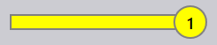

ジョブビュー
このセクションでは、ジョブビューで利用可能なさまざまなビュー（ジョブ、パーツ、ネスト、編集、シミュレート、エクスポート）について説明します。
ジョブ
ジョブ オプションを選択すると、ソフトウェアで現在設定されているすべてのジョブのリストが表示されます。ジョブをダブルクリックして詳細を表示するか、右クリックして追加オプションにアクセスできます。
-
ジョブはタイルビューで表示され、各ジョブはジョブID、ジョブ参照、顧客名、合計パーツ、納期、ジョブステータスバーなどの基本プロパティとともに表示されます。
-
各ジョブタイルには、スタックカード形式でパーツ画像も表示されます。マウスホイールを使用して、ジョブ内のすべてのパーツをスクロールできます。

ジョブの詳細
-
タイルをダブルクリックするか、タイルを選択した後に Enter キーを押すと、ビューが詳細モードに切り替わります。
-
詳細ページには、パーツリストとネストされたシート（レイアウト）（ある場合）が表示されます。
-
詳細ページでジョブを切り替えるには、上下矢印キーを使用します。
-
パーツスタック上でマウスホイールをスクロールすると、パーツリストとレイアウトの両方でパーツがハイライト表示されます。
-
レイアウトを選択すると、レイアウトとそれにネストされているすべてのパーツがパーツリストでハイライト表示されます。ハイライトは1分後に自動的にオフになります。

-
ネスティングサマリー：
-
パーツ：ジョブ内の注文アイテムの合計数と合計数量を表示します。
-
シート：ネストされたシートの合計数と合計シート数量を表示します。
-
-
作業ステップ：
-
曲げ加工：割り当てられた機械と処理される注文数量を表示します。
-
切断：割り当てられた機械と処理される注文数量を表示します。
-
優先順位
-
まず、画面の左側にある Jobs アイコンをクリックし、編集するジョブを選択してから、画面の右側にある edit をクリックします（Jobsオプションが選択されていることを確認してください）。
-
または、選択したジョブを右クリックし、文書をチェックアウトして編集します アイコンをクリックします。
-
edit をクリックすると、ジョブ編集ウィンドウが表示されます。このウィンドウでは、ジョブの優先順位を設定または変更できます。

-
ジョブパーツの優先順位に基づいて、ジョブタイル内のジョブ参照はそれに応じて色分けされます。
-
ジョブパーツは、まず優先順位で並べ替えられ、次に納期で並べ替えられます。また、優先順位に応じて色分けされます。
-
ネスティング時には、Urgent パーツが最初に考慮され、次に High、次に Normal、最後に Low 優先度のパーツがネストシート上の残りのスペースに配置されます。
-
ネストシートも優先順位に応じて並べ替えられ、色分けされます。
| ジョブ優先順位 | 色の説明 |
|---|---|
|
Urgent |
|
Normal |
|
High |
|
Low |


ステータス
-
ジョブステータスバーは、処理された数量または残りの数量に基づいて、ジョブの進行状況または状態を示すカラーコードを使用します。
-
ジョブ内のパーツとネストシートも、全体のJOB内の個別のステータスを反映するために一致する色でハイライト表示されます。
-
カラーコーディングにより追跡が改善され、オペレーターが一目で生産ステータスを簡単に確認できるようになります。


| ジョブステータス | 説明 |
|---|---|
|
準備未完了 |
|
ネスティング |
|
準備完了 |
|
Bend Planned |
|
シートなし |
|
曲げ加工待ち行列 |
 |
切断待ち行列 |
|
完了 |


パーツ
Active Partsビューには、アクティブなジョブ内で現在進行中のすべてのパーツが表示されます。
Each part is represented as a tile showing key details such as part name, dimensions, material, thickness, quantity, and due date. A visual preview of the part is also displayed.
This view helps users monitor the processing status of individual parts and track their progress across ongoing jobs.

Nests
The Active Nests view displays all nests that are currently in progress within active jobs.
Each nest is represented with relevant details such as number of parts, and processing status. A visual layout of the nested parts is also displayed.
This view helps users monitor nesting progress and track how parts are arranged and processed on sheets.

Edit
The Edit option allows you to modify the selected item.
Based on the current view, the selected instance is opened for editing:
-
In Jobs view, the selected job is opened for editing.
-
In Active Parts view, the selected part is opened for editing.
-
In Active Nests view, the selected nest is opened for editing.

Export csv
The Export option lets you select job information and export it to a CSV file.
-
Click the jobs icon.
-
Click the export option on the right side of the screen.

-
A dialog box appears showing available fields:

-
Select the checkboxes for the fields you want to export.
-
Use the Group By option if you want to group the data by a selected field.
-
Click Export to generate the CSV file.
Additional information
There is also three additional icons on the right of the screen which are シミュレーション, Goto and 戻る.
-
Simulate will open the selected item for a more detailed view.
-
Goto will switch the focus and display on the part or the nest that is selected.
-
Back will go back one level from where you currently are, for example clicking 戻る while in simulation will take you back to the main job and from a job will take you back to the main jobs display.